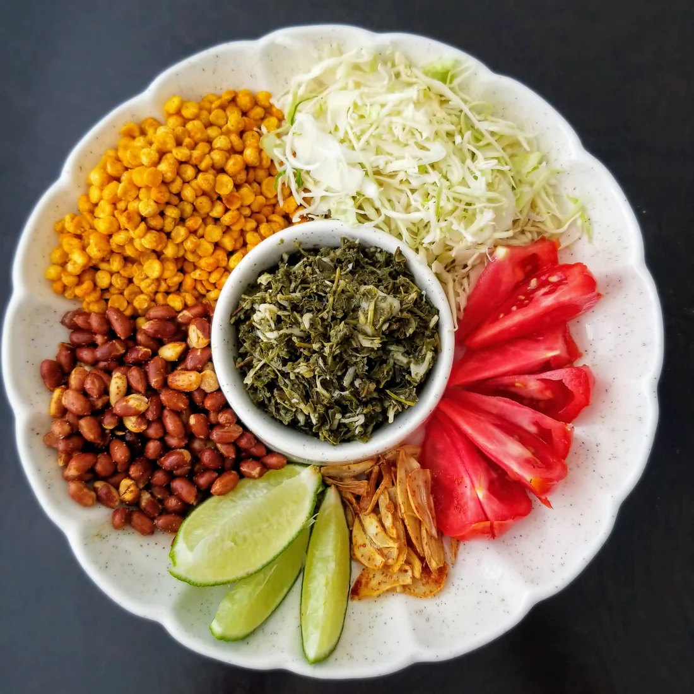
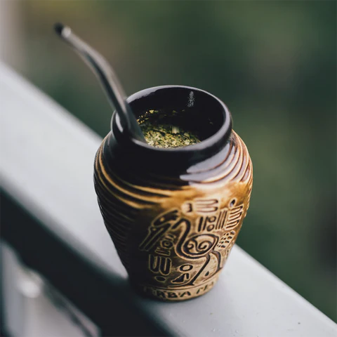
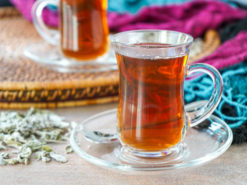
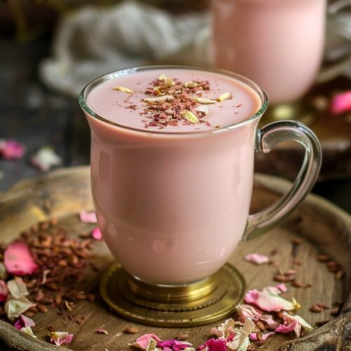
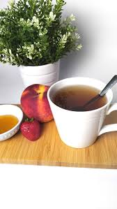
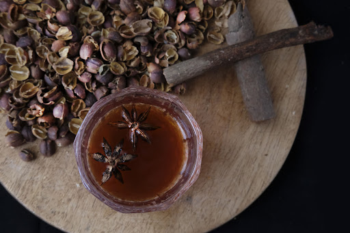
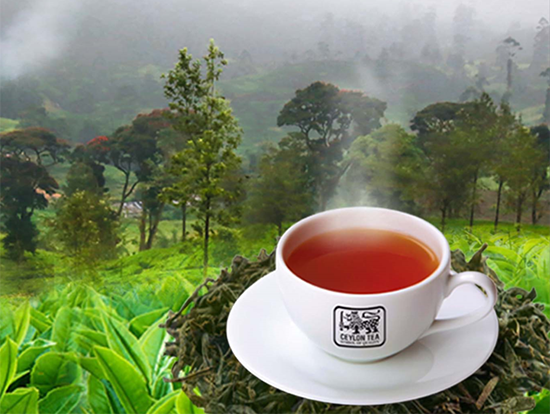
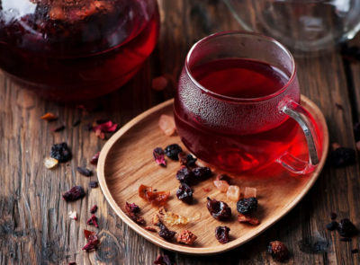
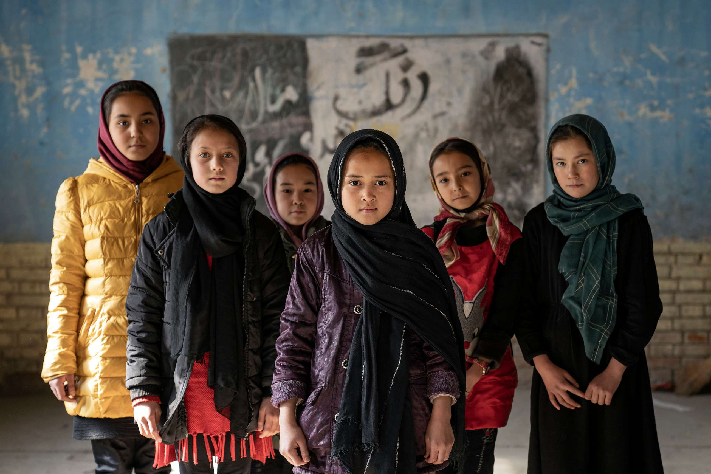
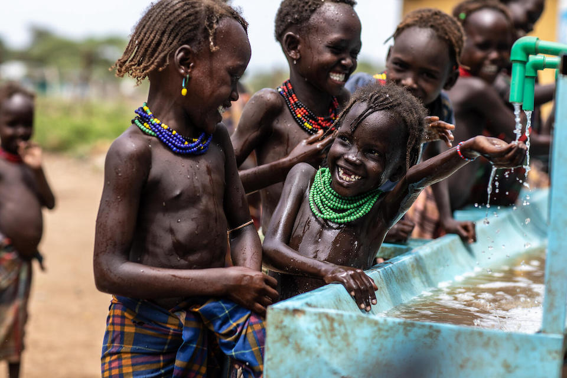

Welcome to Beneath the Brew
“Ah... the tea reveals more than taste,” says Master Wu. “It whispers of the earth, of people, of journeys untold.”
Guided by Master Wu, we explore teas from ten regions around the world — each cup telling a story of resilience, culture, and connection.
Master Wu’s Selection
Myanmar Green Tea
Syrian Sage Tea
Palestinian Mint Tea
Kashmiri Kahwa
Congolese Herbal Tea
Yemeni Spiced Tea
Sri Lankan Ceylon Tea
Sudanese Karkade Tea
Afghan Green Tea

Ethiopian Coffee-Tea Blend

Myanmar Green Tea
Laphet (fermented tea leaves) have been cultivated for centuries in the lush Shan Hills of Myanmar, where the leaf is not only brewed but eaten as part of a ceremonial salad symbolizing community and hospitality. The tradition ties deeply into local culture, with entire families involved in small-scale tea production passed down across generations. Since the military coup in 2021 and accompanying conflict, Myanmar has been thrust into a humanitarian crisis: tea farmers face disrupted production, land seizures, and unsafe working conditions for many in ethnic minority regions. Entire villages have been displaced and traditional supply chains broken, making it harder for local producers to sustain their livelihoods.
Recipe
- 1 tbsp green tea leaves
- 1 cup hot water (80°C)
- Steep 3–4 minutes
- Serve warm or chilled with sesame seeds & roasted peanuts

Syrian Sage Tea

Maramiya (sage tea) is a time-honored herbal infusion in Syria, grown in home gardens and on wild slopes, served to guests in living rooms as a gesture of healing, comfort and connection. It reflects multi-generational skincare and wellness traditions in Syrian households, connecting people with the land and their heritage. Syria’s long-running conflict, now over a decade old, has devastated communities: millions are internally displaced, infrastructure is shattered, and basic services remain scarce. Humanitarian agencies estimate that millions more Syrians require aid, and up to several hundred thousand have lost their lives—making the continuity of culture, such as tea-sharing, both resilient and at risk.
Recipe
- 1 tsp dried sage
- 1 cup boiling water
- Steep 5 minutes
- Add honey and lemon
Support Syria
DonatePalestinian Mint Tea

Shai bil Na’na (mint tea) is an essential part of Palestinian hospitality: sweetened with sugar, offered regularly to neighbours and visitors, it embodies welcome, tradition and identity amidst adversity. The mint-laden brew is tied to olive-grove homes, communal gatherings and the endurance of cultural roots under pressure. The Palestinian territories endure immense hardship: unemployment reached ~24 % in 2022 and ~31 % under ILO under-utilisation standards. Restricted movement, economic blockade, house demolitions, and limited access to resources severely impact daily life for many families trying to maintain agrarian or tea-host-home traditions.
Recipe
- 1 tsp black tea
- Fresh mint sprigs
- 1–2 tsp sugar
- Boil, pour, and serve with love
Support Palestine
DonateKashmiri Kahwa
Kahwa is a fragrant green-tea blend with saffron, cardamom, cinnamon and almonds, traditionally brewed in samovars in the Himalayan valley of Kashmir. It is a ritual of warmth and hospitality in a region long accustomed to cold winters, family gatherings and cultural resilience. Kashmir has been deeply affected by decades of political and military conflict, curfews, communications blackouts and restrictions on movement, which all impact livelihoods and community cohesion. Even tea-growing and home tea rituals are under pressure when families face economic uncertainty, disrupted supply chains and restricted access to their fields or harvests.
Recipe
- 1 cup water
- 1 tsp green tea
- 2 cardamom pods, a pinch of saffron, crushed almonds
- Simmer gently 3–4 mins
Support Kashmir
DonateCongolese Herbal Tea
In the Democratic Republic of the Congo, herbal teas made from lemongrass, ginger and indigenous herbs embody centuries of community-based healing practices and local knowledge of the forest. These teas are not just for flavour but for wellness and storytelling, linking present generations with ancestral traditions of plant medicine and social gathering. The DRC faces one of the largest displacement crises in the world — nearly seven million internally displaced people as of early 2025, some 90 % of them due to conflict. NRC Arable land is destroyed, access to clean water and sanitation is limited in many IDP sites, and many small producers are cut off from markets, putting traditional tea production under further strain.
Recipe
- Fresh lemongrass or 1 tsp dried
- Boil for 5 minutes
- Add ginger and honey
Support Congo
DonateYemeni Spiced Tea
Shai Adeni is a richly spiced Yemeni black tea infused with cardamom, cloves and cinnamon, traditionally served strong and sweet alongside dates in tea-houses that are hubs of social life. It is a gesture of hospitality and shared calm in a country where the everyday is often anything but calm. Yemen is now enduring one of the worst humanitarian crises globally: an estimated 19.5 million people (over half the population) need humanitarian assistance in 2025, including some 4.8 million internally displaced persons. Health facilities are collapsing, food insecurity is rampant, and the tea tradition persists as a symbol of normalcy amid collapse.
Recipe
- Black tea + cardamom + cinnamon stick
- Boil with milk & sugar for 5 minutes
Support Yemen
Donate
Sri Lankan Ceylon Tea
Ceylon Tea—grown in Sri Lanka’s central highlands since the 19th century—is globally celebrated for its bright colour, brisk flavour and premium quality. The tradition is woven into the identity of the tea-estate communities, many of whom are Tamil women whose families have worked the fields for generations. Yet the industry stands at a cross-roads: while Sri Lanka exported about 252 million kg of tea in 2023 earning over USD 1.2 billion, the labour force is shrinking as estate workers migrate or quit due to low wages and poor conditions. At the same time, Sri Lanka is navigating an economic crisis, skyrocketing fertiliser and fuel costs, and labor issues which all put pressure on both the tradition and the sustainability of the tea sector.
Recipe
- 1 tsp black Ceylon tea
- 200ml boiling water
- Steep 3–5 mins, add milk or lemon
Support Sri Lanka
DonateSudanese Karkade Tea
Karkade (hibiscus tea) is beloved across Sudan: deep crimson, tart, often sweetened, and served at gatherings as a gesture of hospitality, celebration and healing. The cultivation of hibiscus flowers and communal tea-drinking are part of social fabric that this current crisis strains. Sudan’s conflict since April 2023 has produced massive displacement: as of early 2025, about 11.4 million internally displaced persons and roughly 3 million refugees abroad. Basic services are broken, food insecurity is at catastrophic levels, and traditional tea growing and social tea rituals are deeply disrupted by displacement and instability.
Recipe
- 1 tbsp dried hibiscus
- 2 cups water + sugar to taste
- Boil 5 mins, serve hot or cold
Support Sudan
DonateAfghan Green Tea

Chai Sabz (green tea often with cardamom) is central to Afghan hospitality: served in chaikhanas (tea-houses), in homes and at gatherings, it reflects tradition, community, respect and comfort. Tea rituals in Afghanistan link people across generations, and the act of offering tea is a sign of mutual trust and identity. Afghanistan is enduring deep humanitarian and development crises: around 9.5 million people face severe food insecurity in 2025, and 3.5 million children under 5 are expected to be malnourished. Political instability, economic collapse and drought-driven crop failures all hamper both tea-cultivation and the social rituals around tea which sustain connection under hardship.
Recipe
- 1 tsp green tea
- Pinch of cardamom
- Boil, steep 3 mins, add sugar
Support Afghanistan
DonateEthiopian Coffee-Tea Blend

In Ethiopia, although coffee reigns supreme as the birthplace of the bean, tea and herbal blends have long been part of daily life—blending indigenous herbs and sometimes tea or coffee in ceremonial and communal settings. These blends connect people to land, tradition and ritual of hospitality which stretch back generations. Still, Ethiopia’s stability is challenged: conflict in the Tigray region has displaced millions, damaged infrastructure and strained food systems; many communities face food insecurity, disrupted livelihoods and limited access to services. The tea-and-herb traditions persist as small acts of continuity even as much is upended.
Recipe
- ½ tsp black tea + ½ tsp ground coffee
- Simmer 3–4 mins with sugar
- Strain and serve small and strong